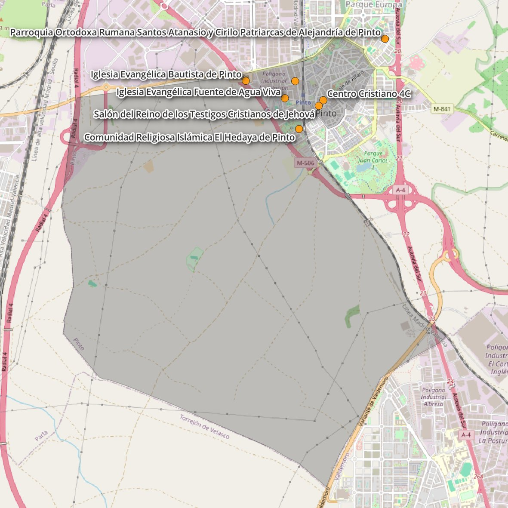
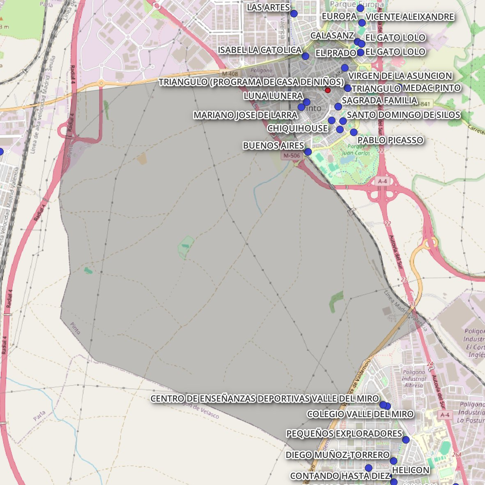

Puntos de interés en el territorio parroquial
Parroquia Santo Domingo de Silos (Pinto) · Arciprestazgo de Valdemoro
Entidades religiosas no católicas

6 entidades religiosas no católicas en el territorio de la parroquia.
Evangélicos (3)
- Centro Cristiano 4CCalle del Real 27, Pinto
- Iglesia Evangélica Bautista de PintoCalle de San José 2 Bajo, Pinto
- Iglesia Evangélica Fuente de Agua VivaCalle de San José 6 Nave 7, Pinto
Adventistas (1)
- Iglesia Adventista del Séptimo Día (Madrid Pinto)Calle de Fuentevieja 23, Pinto
Musulmanes (1)
- Comunidad Religiosa Islámica El Hedaya de PintoCalle Doce de Octubre 9 Local B, Pinto
Testigos de Jehová (1)
- Salón del Reino de los Testigos Cristianos de JehováCalle del Rebolledo 3 Bajo Derecha, Pinto
Fuente: Registro de Entidades Religiosas del Ministerio de la Presidencia, Justicia y Relaciones con las Cortes. Situación en el mapa: dirección geocodificada con CartoCiudad (IGN) o Nominatim (OpenStreetMap).
Centros educativos

4 centros educativos en el territorio de la parroquia (público: 3, privado concertado: 1).
| Centro | Tipo | Titularidad | Domicilio | Web |
|---|---|---|---|---|
| ISABEL LA CATOLICA | Colegio de educación infantil y primaria | Público | Calle de San Nicolás, 8, 28320 Pinto | Página web |
| MARIANO JOSE DE LARRA | Centro público de educación de personas adultas | Público | Plaza del Raso Rodela, 6, 28320 Pinto | Página web |
| NUESTRA SEÑORA DE LA PROVIDENCIA | Centro privado de educación infantil, primaria y secundaria | Privado concertado | Calle de San José, 1, 28320 Pinto | Página web |
| VIRGEN DE LA ASUNCION | Escuela infantil | Público | Plaza Virgen Asunción, s/n, 28320 Pinto | Página web |
Fuente: registro de centros educativos de la Comunidad de Madrid. Solo se recogen los centros de alta.